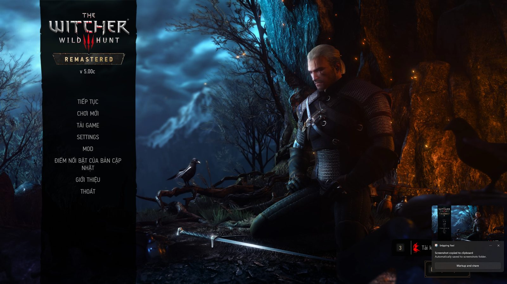
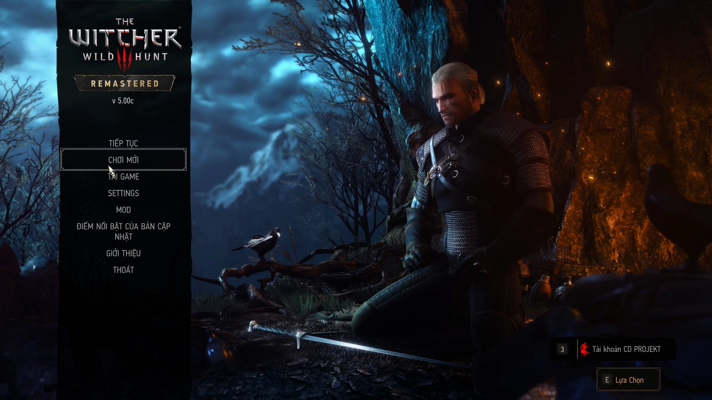

● Hoàn thànhNhập vaiHành độngThế giới mở
The Witcher 3: Wild Hunt - Remastered
Giới thiệu bản Việt hóa
Bản Việt hóa cho The Witcher 3 bản Remaster, dựa trên bản Việt hóa cộng đồng của Viethoagame và dịch bổ sung phần còn thiếu: giao diện mới của bản Remaster, nhiều nhật ký/thư/sách Blood and Wine, phụ đề video. Xưng hô được soát theo quan hệ nhân vật: Geralt gọi Vesemir là "thầy", Ciri gọi Geralt là "cha", Yennefer và Triss "anh – em", dân thường gọi Geralt là "anh", người hầu và hiệp sĩ Toussaint gọi "ngài".
Đã dịch những gì
- Chữ trong game: 88.929/96.915 chuỗi (~1,09 triệu từ tiếng Anh) đã có tiếng Việt: 68.918 chuỗi lấy từ bản Việt hóa của Viethoagame (có sửa xưng hô, lỗi nghĩa); 20.008 chuỗi (~300.000 từ) dịch bổ sung bằng AI rồi soát lại
- Gồm: thoại và lựa chọn hội thoại, nhiệm vụ, nhật ký, thư, sách, bảng thông báo, vật phẩm và kỹ năng (tên riêng giữ tiếng Anh), giao diện và menu mới của bản Remaster (cài đặt đồ họa, chụp ảnh, lưu/tải, trợ năng, menu mod), màn hình tải, Gwent.
- Hai bản mở rộng: Hearts of Stone và Blood and Wine (bổ sung các đoạn mà bản cũ còn tiếng Anh).
- Phụ đề video: video kể chuyện giữa các chương, đoạn kết, hồi tưởng, đoạn mở đầu (cả phụ đề rời lẫn phụ đề nhúng trong video).
- Font tiếng Việt: vá font giao diện để hiện đủ dấu.
- Soát chất lượng: Xưng hô theo quan hệ nhân vật chính, có công cụ kiểm tra theo người nói, kể cả lựa chọn hội thoại; Soát 262 lá thư, sửa 96 lá sai quan hệ người gửi – người nhận; Đợt 4 (bản 1.5.1) sửa 1.318 câu: 878 câu: dân thường gọi Geralt là "ngươi" → "anh"/"ngài"; 226 câu: "chúng ta" ↔ "chúng tôi"/"bọn ta"; 190 câu: dịch sai nghĩa hoặc thành ngữ dịch theo nghĩa đen; 24 câu: nhãn giao diện sai nghĩa; Quét toàn bộ: không lẫn chữ Trung/Nhật/Hàn, không lỗi thẻ định dạng
Hướng dẫn cài đặt
- Thoát hẳn game.
- Giải nén, chạy CaiVietHoa_Witcher3.exe. Bộ cài tự tìm thư mục game; không thấy thì bấm "Đổi…" để chọn.
- Bấm CÀI VIỆT HÓA, đợi 100%.
- Vào game: Options → Language → Text language = English.
- Game cập nhật hoặc Verify thì chạy bộ cài lần nữa.
- Muốn gỡ: mở bộ cài → "Gỡ Việt hóa".
Ảnh trong game

